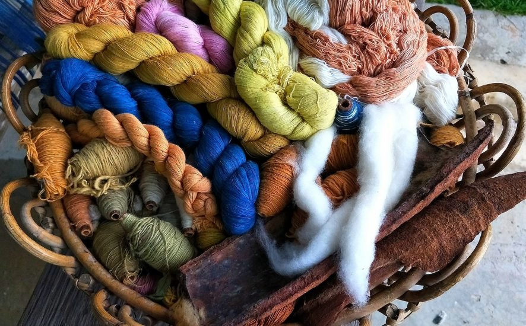
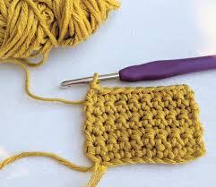

Welcome!
Welcome to Yarn Wiki, the best website for all your yarn inquiries! Our website aims to help beginner fiber artists learn more about their medium and show the endless possibilities you can make.


We hope to teach you more about the yarn world!
Have more questions? Use the Contact tab to ask for more!